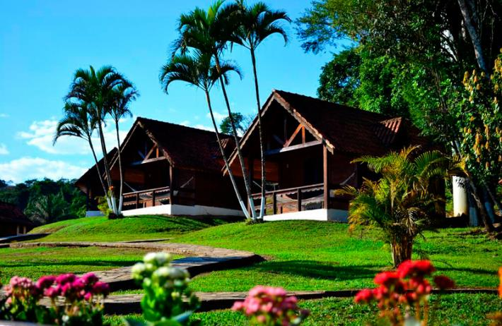
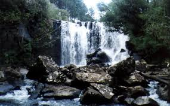

Contato: (53)1122-3344


Café da Manhã - Você irá saborear uma grande variedade, produzida na pousada ou de produtores locais.
Servido das 7h30min às 10h
Restaurante - Servimos almoço do 12h às 14h e Janta das 20h às 23h30min
Lazer - Temos Passeio a Cavalo, Trilhas, Cachoeiras, Piscina, Churrasqueiras, Pedalinho